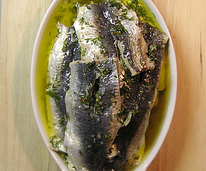

Vitlöks Marinerader Sardiner
5 von 61 kg ganze frische Sardinen ausnehmen, Kopf und Schwanz entfernen. Mit den Daumen der längenach das Rückgrat heraus drücken und mit einem scharfen Messer sämtliche Finnen entfernen. Restliiche Geräte mit einem Messer heraus schneiden. Die Filets (noch ca 500 Gramm) in einer Lauge aus 2 Teilen Apfelessig und 1 Teil Wasser eine halbe Stunde beizen bis sie weisslich werden, dann gut abtropfen. Nun in einer Marinade bestehend aus 1 dl Olivenöl und 1 dl Zitronensaft, 4-5 Zehen gestossene Knoblauchzehen, viel gehackter Dill ein TL weisser Pfeffer, 1 TL Oregano und 3 TL Salz mind. 24 Stunden ziehen lassen.
